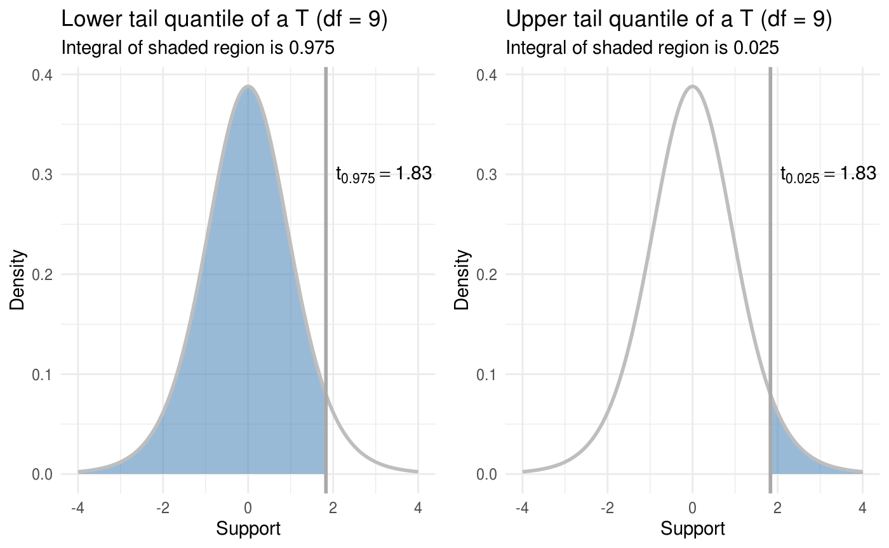

vignettes/one-sample-t-confidence-interval.Rmd
one-sample-t-confidence-interval.RmdIn this vignette we’ll calculate an 88 percent confidence interval for the mean of a single sample. We’ll use the same data we use for a one-sample T-test, which was:
\[ 3, 7, 11, 0, 7, 0, 4, 5, 6, 2 \]
Recall that a confidence interval for the mean based off the T distribution is valid when:
In the T-test example we verified that the sample seems to come from a normal distribution using a quantile-quantile plot (QQ-plot).
The formula for a confidence interval with confidence coefficient \(1 - \alpha\) (in our case this is 0.88) is then:
\[ \left( \bar x + t_{n-1, \alpha / 2} \cdot \frac{s}{\sqrt{n}}, \bar x + t_{n-1, 1 - \alpha / 2} \cdot \frac{s}{\sqrt{n}} \right) \]
where \(\bar x = \frac 1n \sum_{i=1}^n x_i\) is the sample mean, \(t_{n-1, \alpha / 2}\) is the \(\alpha / 2\) lower quantile of a \(t_{n-1}\) distribution, \(s = \sqrt{\frac{1}{n-1} \sum_{i=1}^n (x_i - \bar x)^2}\) is the sample standard deviation, and \(n\) is the sample size. Since the T distribution is symmetric around zero, this is exactly equivalent to
\[ \left( \bar x - t_{n-1, 1 - \alpha / 2} \cdot \frac{\sigma}{\sqrt{n}}, \bar x + t_{n-1, 1 - \alpha / 2} \cdot \frac{\sigma}{\sqrt{n}} \right) \]
which may look slightly more familiar. Having trouble seeing what the difference is? Look at the subscript of the quantiles \(t\). Let’s go ahead and calculate this out in R. Since our confidence coefficient is 0.88 (corresponding to an 88 percent confidence interval) we have:
\[ 0.88 = 1 - \alpha \]
so that \(\alpha = 0.12\). Now we can get started.
library(distributions3)
# read in the data
x <- c(3, 7, 11, 0, 7, 0, 4, 5, 6, 2)
n <- length(x)
# make T_9 random variable
T_9 <- StudentsT(df = 9)
# first approach
mean(x) + quantile(T_9, 0.12 / 2) * sd(x) / sqrt(n)
#> [1] 2.631598
mean(x) + quantile(T_9, 1 - 0.12 / 2) * sd(x) / sqrt(n)
#> [1] 6.368402So our confidence interval using the first set of equations is (2.63, 6.37). Now we use the second set of equations:
# second approach
mean(x) - quantile(T_9, 1 - 0.12 / 2) * sd(x) / sqrt(n)
#> [1] 2.631598
mean(x) + quantile(T_9, 1 - 0.12 / 2) * sd(x) / sqrt(n)
#> [1] 6.368402We get the same thing! Just like we expected.
There’s one last thing we need to address. You may not have seen either of the formulas for a T-confidence interval that I wrote. You may have seen the formula:
\[ \left( \bar x - t_{n-1, \alpha / 2} \cdot \frac{\sigma}{\sqrt{n}}, \bar x + t_{n-1, \alpha / 2} \cdot \frac{\sigma}{\sqrt{n}} \right) \]
If this is you, you have my condolences, and your instructor probably hates you. Ask that they use lower quantile notation rather than upper quantile notation.
This looks almost like the second approach, except using \(t_{n-1, \alpha / 2}\) instead of \(t_{n-1, 1 - \alpha / 2}\). What this comes down to is whether or not \(t_{n-1, \alpha / 2}\) represents a lower quantile or an upper quantile. For a lower quantile, you look at the p.d.f. and start integrating from negative infinity, stop when the integral equals \(\alpha\), and that take value to be the quantile. This is the only sane way to do things, although it requires being slightly more verbose so it can be inconvenient at times. Thus the upper quantile, in which case you do the same integration but start from positive infinity.
The difference is easiest to understand with a picture:

Note that distributions always returns a lower quantile from the quantile() function.
If you are truly unfortunate, your instructor may use \(t_{n-1, \alpha / 2}\) to mean lower tail quantiles at times and upper tail quantiles at other times. If this is the case, only god can help you.
If you want to verify that your calculation is correct, R has a function t.test() that performs T-tests and calculates T confidence intervals for means.
To get a confidence interval for a single sample, we pass t.test() a vector of data, and tell it the confidence coefficient (recall ours was 0.88) via the conf.level argument. conf.level defaults to 0.95, which means if we don’t specify a confidence interval we get a 95 percent confidence interval.
t.test(x, conf.level = 0.88)
#>
#> One Sample t-test
#>
#> data: x
#> t = 4.1367, df = 9, p-value = 0.002534
#> alternative hypothesis: true mean is not equal to 0
#> 88 percent confidence interval:
#> 2.631598 6.368402
#> sample estimates:
#> mean of x
#> 4.5t.test() returns the interval (2.63, 6.37), exactly what we calculated by hand, which is reassuring. It also does a one-sample T-test for us as well.
If we don’t specify conf.level, we get a 95 percent confidence interval:
t.test(x)
#>
#> One Sample t-test
#>
#> data: x
#> t = 4.1367, df = 9, p-value = 0.002534
#> alternative hypothesis: true mean is not equal to 0
#> 95 percent confidence interval:
#> 2.0392 6.9608
#> sample estimates:
#> mean of x
#> 4.5This is wider than the 88 percent confidence interval, as we would expect.